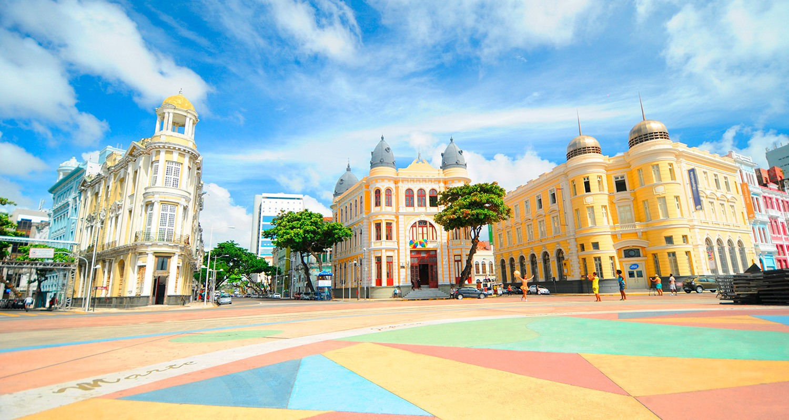
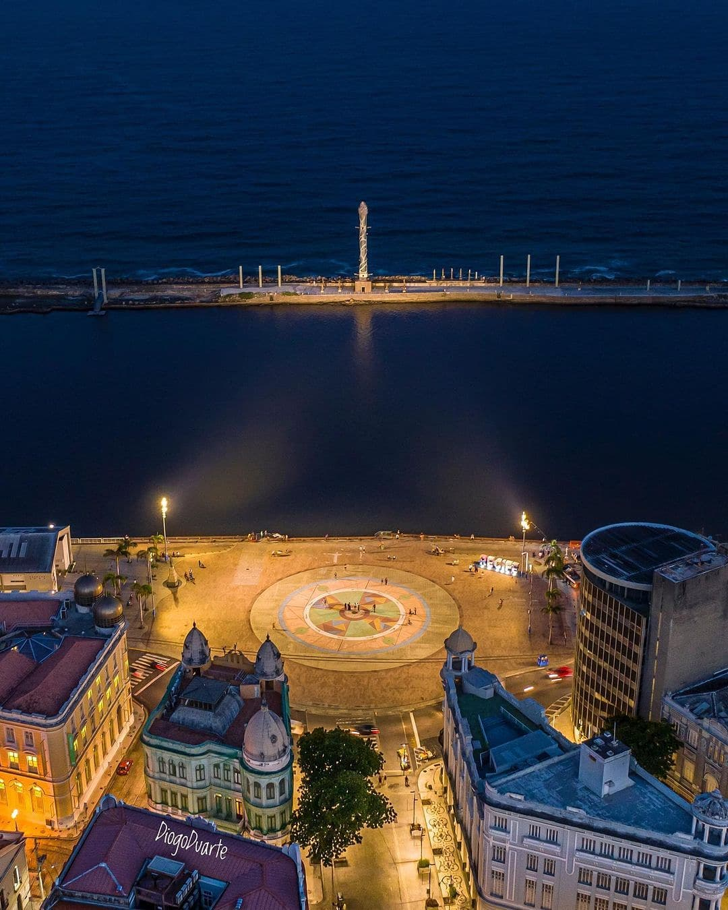

Marco Zero em Recife

Esta imagem mostra o belo pôr do sol no Marco Zero de Recife, um dos melhores momentos para apreciar a vista deslumbrante.

O Marco Zero é conhecido por seu impressionante calçadão, onde moradores e turistas desfrutam de caminhadas à beira-mar.

Essa foto destaca o icônico Marco Zero, uma estrutura de referência que simboliza o ponto central da cidade de Recife.